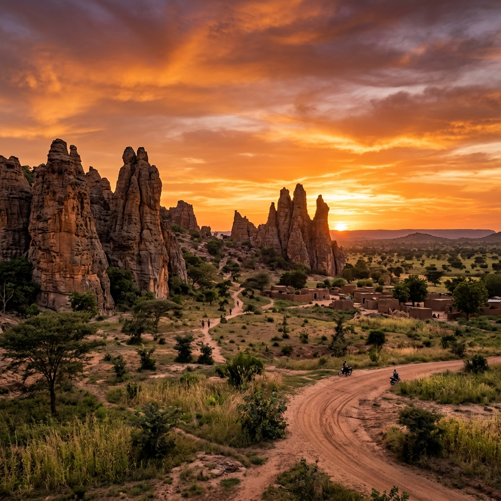

Banfora
18k
Pics de Sindou
Formations rocheuses sculptées par le vent

RetourLe cœur battant de l'art et de l'intégrité africaine
Anciennement Haute-Volta, le Burkina Faso, ou "Pays des Hommes Intègres", est une destination fascinante pour les amoureux d'authenticité. Réputé pour son dynamisme culturel mondial (FESPACO, SIAO), le pays offre des paysages spectaculaires comme les pics de Sindou, une architecture unique à Tiebélé et une tradition artistique ancestrale. C'est une terre de rencontres où la fraternité et l'hospitalité ne sont pas de vains mots.
Découvrez les 15 joyaux du patrimoine burkinabé
Formations rocheuses sculptées par le vent

Architecture peinte par les femmes Kasséna

Chef-d'œuvre de l'architecture de terre soudano-sahélienne

Forteresse millénaire classée à l'UNESCO

Escale rafraîchissante au cœur des cascades

Musée de granit à ciel ouvert

Rencontre mystique avec les sauriens protégés

Toute la diversité ethnographique du pays
Traces d'une civilisation sahélienne antique

Réserve de biosphère et refuge des lions
Siège de l'empereur des Mossi

Poumon vert urbain et parc zoologique

Sanctuaire des hippopotames

Carrefour des peuples du Sahel
Majestueux édifice en briques rouges
Un héritage de courage et de créativité.
Le Burkina Faso est un carrefour culturel majeur en Afrique. De la puissance historique de l'Empire Mossi à l'effervescence artistique contemporaine, le pays a su préserver ses racines tout en devenant une capitale mondiale du cinéma (FESPACO) et de l'artisanat. L'intégrité, valeur fondamentale du pays, se reflète dans chaque interaction et chaque tradition préservée.
Le plus grand festival de cinéma africain, faisant de Ouaga la capitale du 7ème art.
Des traditions sacrées où les masques animaliers dansent pour protéger la communauté.
Le Salon International de l'Artisanat de Ouagadougou, vitrine de l'excellence africaine.
Un héritage politique d'autosuffisance et de fierté nationale qui anime toujours la jeunesse.

L'excellence de l'artisanat burkinabé. Des bronzes célèbres aux tissus Bogolan, ramenez un morceau de l'intégrité burkinabé.
 En stock
En stock
Statue traditionnelle fondue à la cire perdue, spécialité mondiale des artisans burkinabés.
 En stock
En stock
Tissu teint avec de la terre et des décoctions de plantes, motifs géométriques symboliques.
 En stock
En stock
Instrument de musique mélodique en bois et calebasses, accordé par des maîtres luthiers.
Cuir souple et teint avec des colorants naturels, fabriqué à Kaya (Centre-Nord).
Produit cosmétique 100% pur, issu de coopératives de femmes burkinabé.
Vannerie fine et colorée réalisée par les femmes nomades du Sahel.

Ouagadougou, Centre

Quartier Chic, Ouagadougou

Bordure du barrage, Ouagadougou

Havres de paix, Ouaga

Bobo-Dioulasso, Centre

Bobo-Dioulasso, Historique
La cuisine burkinabé est généreuse et basée sur les produits du terroir. Le mil, le maïs et le sorgho en sont les piliers.
Le poulet local grillé, emblème de la convivialité burkinabé.
Riz à la tomate et aux épices, souvent servi avec du bœuf ou du poulet.
Pâte de mil ou maïs, servie avec une sauce gombo ou sauce feuille.
Mélange de feuilles vertes, d'arachides et de riz, très nutritif.
Mélange onctueux de yaourt (ou lait caillé) et de couscous de mil.
Gâteaux de haricots à la vapeur, spécialité Mossi.
Condiment traditionnel issu de la graine de néré, pilier des sauces.
Poisson de fleuve grillé ou braisé, très apprécié à Ouaga et Bobo.
Morceaux d'igname mijotés dans une sauce tomate onctueuse.
Céréale ancestrale légère, servie avec une sauce aux légumes.
Sauce gluante très parfumée, l'accompagnement idéal du Tô.
Infusion de fleurs d'hibiscus rouge, servie bien glacée.
Le Burkina est le centre culturel de l'Afrique de l'Ouest avec des événements de renommée mondiale.
Le plus grand festival de cinéma du continent (Tous les 2 ans à Ouagadougou).
Salon International de l'Artisanat de Ouagadougou, vitrine de l'artisanat africain.
Semaine Nationale de la Culture à Bobo-Dioulasso, célébration des arts traditionnels.
La période la plus agréable. L'harmattan souffle, le ciel est clair et les températures sont douces pour explorer le pays.
La nature est verdoyante, les cascades de Banfora sont à leur débit maximum. Paysages magnifiques.
Vérifiez les zones de voyage conseillées. Les grandes villes comme Ouaga et Bobo sont accueillantes, mais restez vigilant.
Vaccin fièvre jaune obligatoire. Traitement antipaludéen impératif. Hydratez-vous bien (chaleur sahélienne).
Le Burkina est le pays de la parenté à plaisanterie. L'humour et le respect des aînés sont au cœur de la vie sociale.
Prises type C/E. Wi-Fi disponible dans les hôtels. Le Franc CFA (XOF) est la monnaie. Pourboires appréciés.
Expert Bobo & Traditions
Idrissa vous fera découvrir Bobo-Dioulasso et les falaises de Banfora avec une passion contagieuse pour son terroir.
Guide Culturelle Ouaga
Awa connaît l'histoire des Mossi et les meilleurs coins artistiques de la capitale pour une immersion totale.
Expert Tiebélé & Sud
Spécialiste de l'architecture Kasséna, Lamine vous accompagnera à Tiebélé pour comprendre l'art de ces villages.